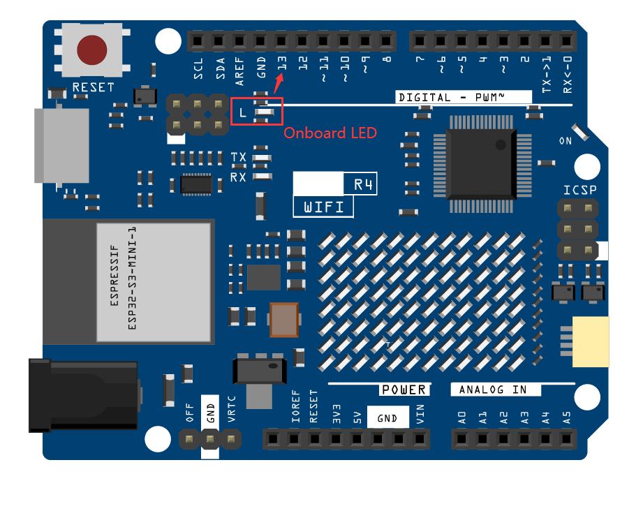

How to upload Sketch to the Board?
In this section, you will learn how to upload the sketch created previously to the Arduino board, as well as learn about some considerations.
1. Choose Board and port
Arduino development boards usually come with a USB cable. You can use it to connect the board to your computer.
Select the correct Board and Port in the Arduino IDE. Normally, Arduino boards are recognized automatically by the computer and assigned a port, so you can select it here.
If your board is already plugged in, but not recognized, check if the INSTALLED logo appears in the Arduino UNO R4 Boards section of the Boards Manager, if not, please scroll down a bit and click on INSTALL.
Search “UNO R4” in Boards Manager and check if the corresponding library is installed.
Reopening the Arduino IDE and re-plugging the Arduino board will fix most of the problems. You can also click Tools -> Board or Port to select them.
2. Verify the Sketch
After clicking the Verify button, the sketch will be compiled to see if there are any errors.
You can use it to find mistakes if you delete some characters or type a few letters by mistake. From the message bar, you can see where and what type of errors occurred.
If there are no errors, you will see a message like the one below.

{kind=link}
{kind=link}
{kind=link}
{kind=link}
{kind=link}
{kind=link}
3. Upload sketch
After completing the above steps, click the Upload button to upload this sketch to the board.
{kind=link}
If successful, you will be able to see the following prompt.
{kind=link}
At the same time, the on-board LED blink.
{kind=link}
The Arduino board will automatically run the sketch after power is applied after the sketch is uploaded. The running program can be overwritten by uploading a new sketch.